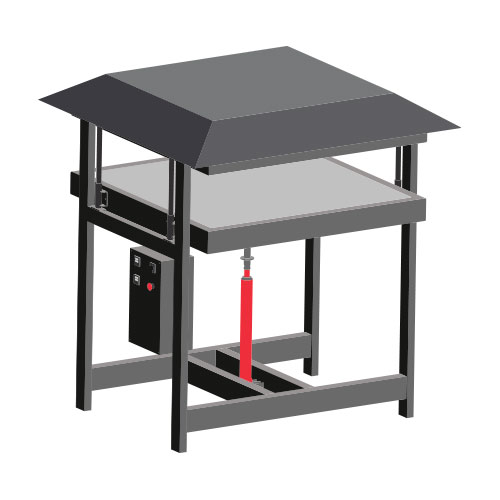

Build a Sheetpress
Build a Sheetpress
Hi! It looks like you might want to build a Sheetpress? That is great! It's a very exciting machine that can recycle big amounts of plastic on a daily basis. And everytime you open up the machine it's a little suprise how the sheet comes out. But ok. Focus. We need to build it first. Watch this video to see how to make the machine in 20 minutes, or have a scroll down below to find out more about specific parts and machines you need to build it.
Pro tip: Before you build, make sure you to read all documentation. Its a big project so make sure you know where you're getting into.
🛠 Required machinery & skills
| Build Sheetpress | Machines needed | Skills needed |
|---|---|---|
|  | - Drill press - Welding machine (not specific) - Lifting system (or some strong friends) | - Welding (expert) - Machining (intermediate) - Assembling (intermediate) - Electronics (expert) |
🔩 Materials and parts
You need to make and buy parts. In the download-kit you can find the complete Bill of Materials. It's a list for the entire Sheetpress system. So it includes the Sheetpress, Cooling press and preparation table. Below you can find the commercial parts you need to buy and we go more in depth on where to look out for.
Jacks option & explanation
The type of jack used for both presses is a long-ram hydraulic bottle jack with an eye connection (round, not plate) at the bottom that allows it to be mounted with a bolt. For the Sheetpress we recommend using a minimum 8 tons of pressure and for the cooling press we recommend using a minimum of 3 tons of pressure. Our CAD models and technical drawings are designed to fit a jack with a 28mm diameter ram which we found to be the most common. Note the tip of the ram is smaller than the rest, it is typical to list the diameter of the tip.
Slider and Spring Mechanism tube diameter
The diameters of the tube for the slider and the spring mechanism are dependent on the diameter of the ram of the jack. The inner section of the spring mechanism and hence the rail for the pressing plates should be the same diameter as the ram. As the outer section of the spring mechanism and the rail need to run smoothly their inner dimension is also dependant on the dimension of the ram on the jack. Ideally the outer dimension should be as thick as possible for strength, as long as your spring fits accordingly. These dimensions are very similar to the Injection barrel and plunger. If you have them left over from building the injection, see if they fit your jack, or try and find a jack that fits them. Alternatively you can modify them on a lathe to fit the jack.
Spring choice
We used a die spring but you could also use a racing motorbike spring or any other that has close dimensions to the one we used which can be found in the engineering drawings. We chose the firmest spring we could, the firmer the better, as long as it is possible to compress it with the jack you use.
Heating element option & explanation
We chose 300W cartridge heaters as our heat source. Cartridge heaters allow the heat to be transferred through conduction, as opposed to radiation, which is much more energy efficient than the alternative. Using many small heat sources spread across the heating plates as opposed to a few large heat sources allows the heat to be distributed evenly. Despite being small, 300w in the quantity that we used is more than a sufficient amount of heat to efficiently melt the common types of plastic we are processing.
If you are going to modify the size of the Sheetpress, we found that one 300W element can sufficiently heat a 240x240mm 10mm thick plate of aluminium. Just adjust the number of these heating elements accordingly. Also note, that we offset the heating elements on the upper and lower heating plates to achieve more even heating.
Aluminium sheet option & explanation
Precision milled aluminium as opposed to rolled aluminium was used as it has several advantages over rolled aluminium. It is less prone to warping with heat, stronger, so less prone to bending from pressure and the surface has a smaller tolerance so it is flatter.
Mould Steel choice
We recommend using either 2mm stainless steel sheet or 2mm galvanised steel sheet for the moulds. Any thinner is too prone to damage from pressing. These sheets are also resistant to corrosion and often come with a polished surface finish which is very favourable for this application. Mild steel sheets also work but have a shorter lifespan due to corrosion and increased tendency for plastic to stick to an unpolished surface. To ensure maximum lifespan of your moulds, keep the following points in mind;
- Do not overload the jack while pressing (only press until the spring is fully compressed)
- Ensure you are using appropriate mould material
- Ensure the initial distribution of shredded plastic is even (not piled up in the centre)
Laser cut or not?
If possible we recommend you laser cut all the sheet steel components, especially the support structure for the pressing plates. The advantages of laser cutting are both level of precision and dramatically reduced build time. If you are unable to get your parts laser cut you can cut the majority of them by hand from 100x6mm steel strip although some require a larger sheet such as the electronics box and the parts of the bottom support structure.
Laser Cut Steel Choice
For the 6mm laser cut components we chose to use hot rolled (HRS 75F70) structural steel for its high tensile strength. This type of steel is hot rolled which also makes it less prone to warping when welding during construction and heating plastic during usage.
For the 2mm laser cut components we used 2mm Cold Rolled steel (CRS CR4) as high strength is not required.
Mould release
We found silicone oil to be the best performing mould release. There are many alternatives, if you find a more available or better performing solution please share it in our online community!
Cooling insulation interest and choice
For the insulation material we chose mineral wool. Mineral wool is widely available, soft so it can be cut easily and packed into irregular shaped cavities. It could be substituted for similar types of soft insulation as long as the temperature resistance is enough to. Glass wool is the next closest substitute, it is commonly made from partly recycled material but it is more expensive, less widely available and more susceptible to damp and hence its life expectancy is shorter.
⚡ Electronic box

Explanation of electric component roles
The core of the system runs on the typical PID-SSR-Thermocouple-Heatsync combination which features in all of our machines.
The main difference is the addition of a mechanical relay, between the main power line in and the heating elements, triggered by the SSRs. This was added so that the current required to power the heating elements does not pass through the SSRs as during prototyping we have experienced them burning out despite being below the rated current.
This is expected to be from the combination of current and heat conducting back down the cables. The mechanical relay provides a physical break and is larger preventing heat from building up inside the relays.
There are two PID controllers, one for the top plate and one for the bottom plate. The k-type thermocouples we used are 3M in length in order to reach the right position on the heating plates.
Between the main power line and the PIDs there is a rotary switch to turn them on and off and an emergency stop.
The heating elements are distributed evenly between each of the three phases. Each plates has one entire phase plus half of another which is shared by the two plates. E.g On the bottom plate ⅔ of the elements are on phase ⅓ of the elements are on phase two and on the top plate ⅓ of the elements are on phase 2 and ⅔ of the elements are on phase 3. The power supply from the control box enters the pressing plates and reaches a ceramic terminal, the ceramic terminal is used as it is capable of withstanding high temperatures.
The heating elements are arranged in a 45° support structure array which is offset on the top and the bottom so that each the heating elements on one plate sit in the centre of the other plate.
They are mounted inside an aluminium block which is mounted to the bottom of the aluminum plate to allow the heat to conduct easily.
For the wiring inside the pressing plates we used ceramic insulated cable. Both when joining cables and attaching them to the terminals we used PTFE base heat shrink as it is capable of withstanding high temperatures.
For any soldering we recommend using high temperature solder with a melting temperature >300°C.
It is mandatory to ground every individual metal component, both pressing plates, both heating plates, the electronics control box and the front panel of the electronics control box.
Cable glands are used whenever a cable passes between the inside and the outside of the body to prevent moisture entering the system and to protect the cable from physical damage. They should be face down on the enclosure to prevent liquid pooling inside the glands.
When wiring the control box, when each wire is screwed to a terminal a crimp is used to secure the wires properly in place.
👌 Tips & tricks while making
Parallel build
If you are building the Sheetpress and the Cooling Press the process is almost identical so you can build them in parallel to simplify the process.
Drilling jigs
The purpose of the drilling Jigs is to both ensure that the two holes used to mount the aluminium blocks to the aluminium plate are spaced evenly so that they align properly and to ensure that the drill remains straight when drilling.
Welding Frame Sequence
First weld the outside frames, then the bottom frame. (When mounting the jack mount plates to the bottom frame, weld the middle plate first as it is not possible to reach it once the outside plates are in place. Use the bolt to align all three plates.)
Bolt the outside frames to the top pressing plate with the entire structure upside down. (Once welded turn over the structure)
Take some offcuts from the beams to to position the bottom frame between the side frames. It should be 100mm from the ground to allow a pallet/pump truck to fit underneath when weld the bottom frame in place.
Welding Pressing Plate Sequence
Tack weld the square frame that surrounds the support structure, It’s important these are the correct dimension and that holes are drilled and cable glands are attached before welding.
Separate the parts for the top support structure and the bottom support structure. The pieces for the top support structure have a small notch in the laser cutting files.
For each part:
- Slot the pieces together.
- Raise them on blocks so they can be clamped from underneath.
- Clamp each intersection as you tack weld it to ensure a flat surface. It is best to weld opposite points of the support structure to avoid warping from uneven tension. Tack all the intersections before fully welding them.
For the bottom part weld the jack mount tabs in place.
Position the support structures inside the square frames, make sure that the aluminium plate sits 3mm above the surface of the square frame.
Tack weld several points where the support structure joins with the frame then fully weld them and finally the corners of the frame.
Tip: The most important part of the steel structure is that both sets of laser cut support structures are perfectly flat. Fortunately they’re slotted precisely to depth, so this can be done by clamping the two sections together.
If you are building both the Sheetpress and Cooling Press make sure to weld the support structure for the Cooling Press before you install the aluminium plate in the Sheetpress pressing plates.
Additional Options
Integrated ventilation
It is possible to run the system without the ventilation but for the safety of you and the people around you we recommend to only turn the machine on when the extraction hood is attached and the ventilation system is turned on. As well as using the ventilation hood we also recommend ventilating the ambient space around the press. The ideal environment to operate the press would be an industrial spray painting room.
Only Sheetpress or complete system
You can make sheets with the Sheetpress alone but the process is slow. You have to wait for the Sheetpress to heat up and cool down for each sheet you make which means you can produce one or two sheets per day. For some people (e.g. craftsmen and artisans) this is acceptable but for many others a faster rate of production is desirable.
To improve ease of use and efficiency we designed three tools to turn the Sheetpress in to a full-on production system. Adding a cooling press, prep table and sliding tool allows you to prepare, heat and cool sheets simultaneously. You are also able to transport them easily and safely between each three of these stages. This dramatically increases the rate of production. So if you are looking to setup an efficient production, build the whole system. If you don't have a lot of space or just want to make a few sheets, make the Sheetpress.

If you need help, have questions or looking for someone to talk to in your lonely cold workspace. Head to the #build channel on Discord. Here we talk nerdy about machines.